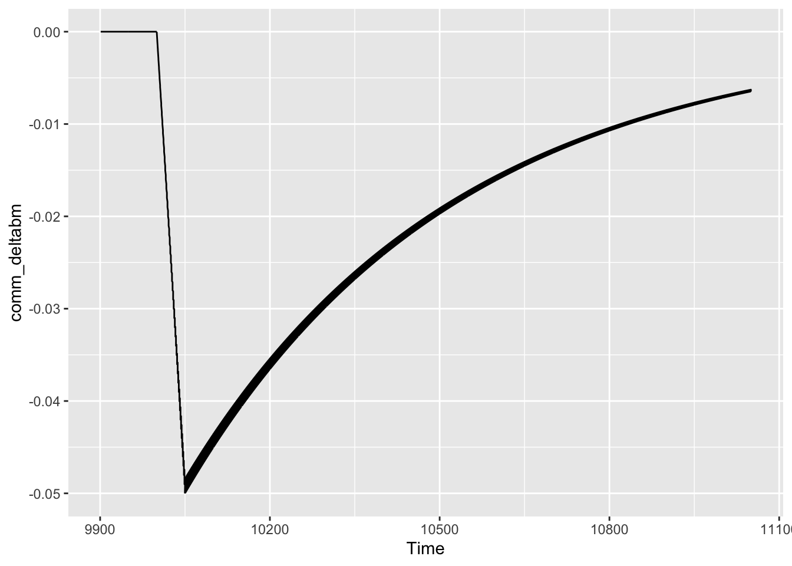
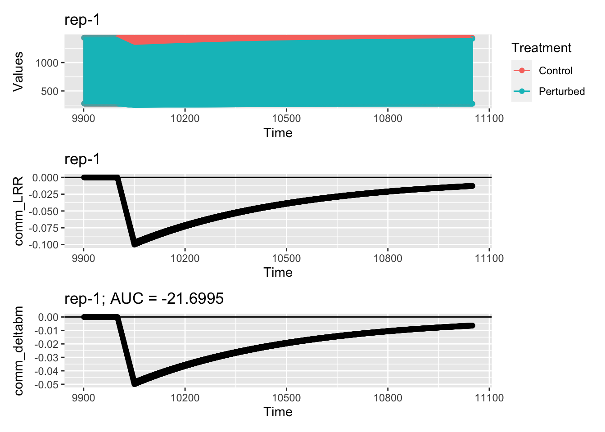
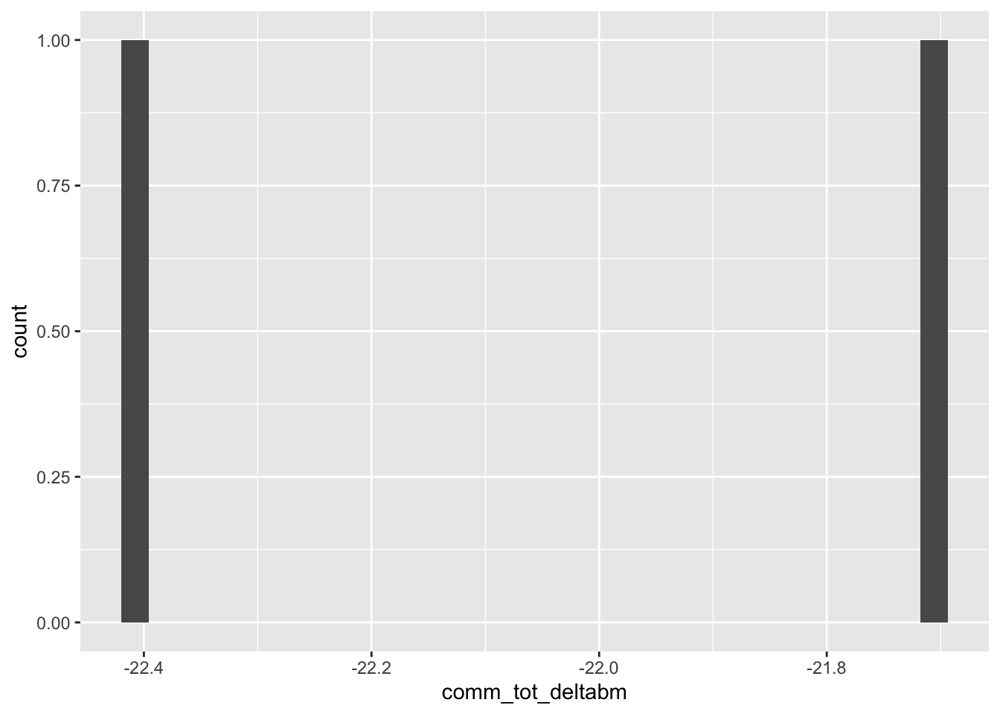
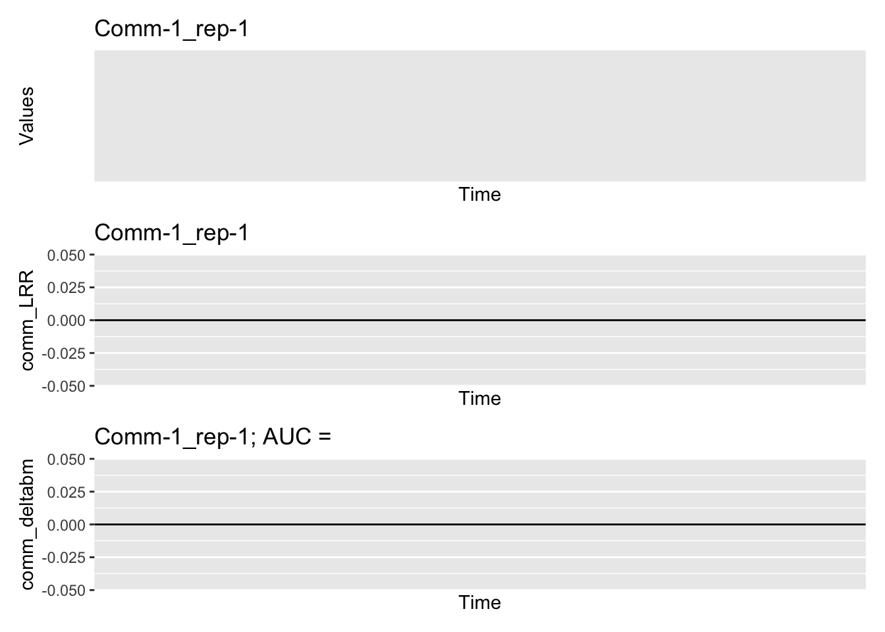
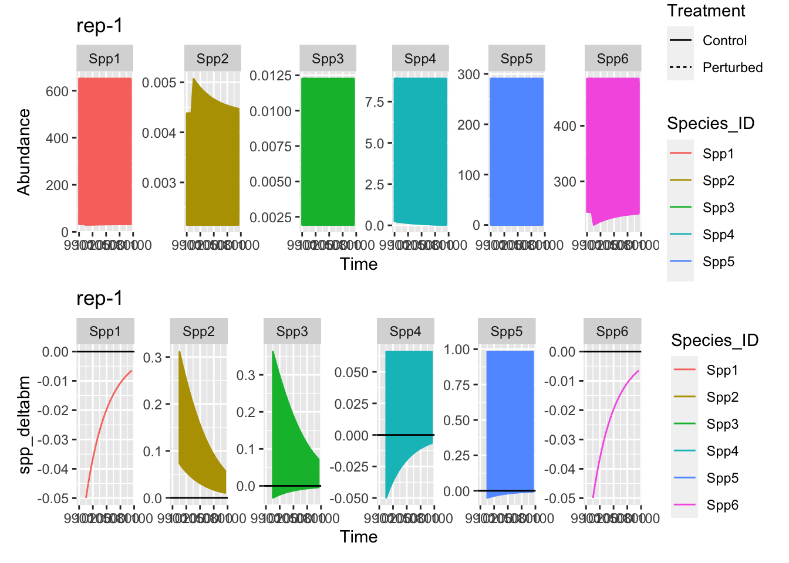
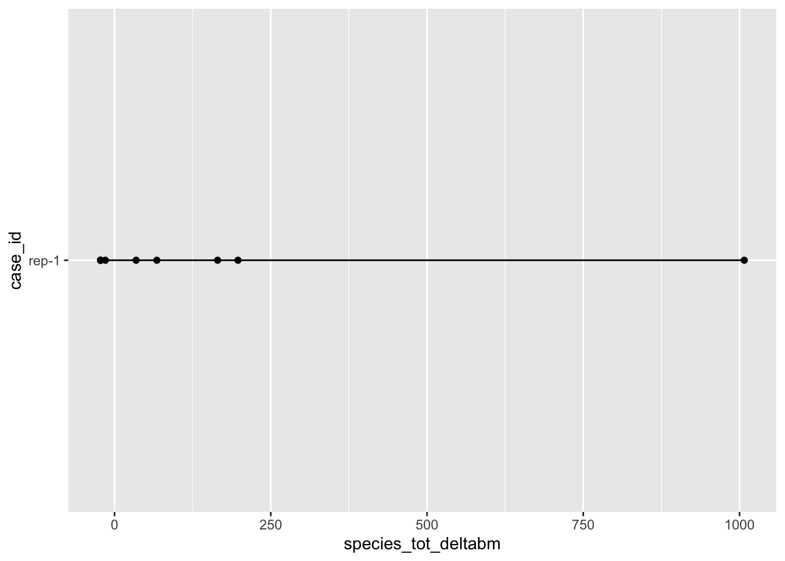
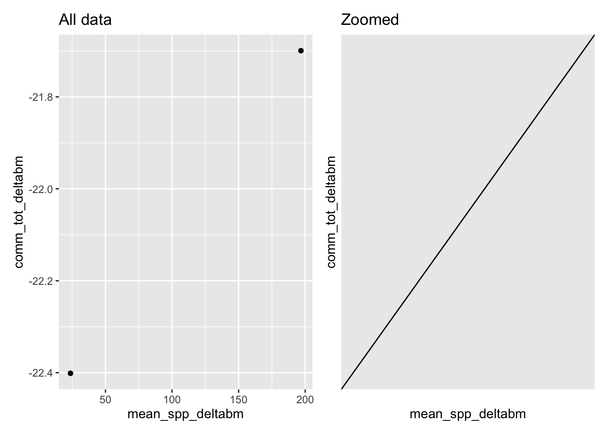
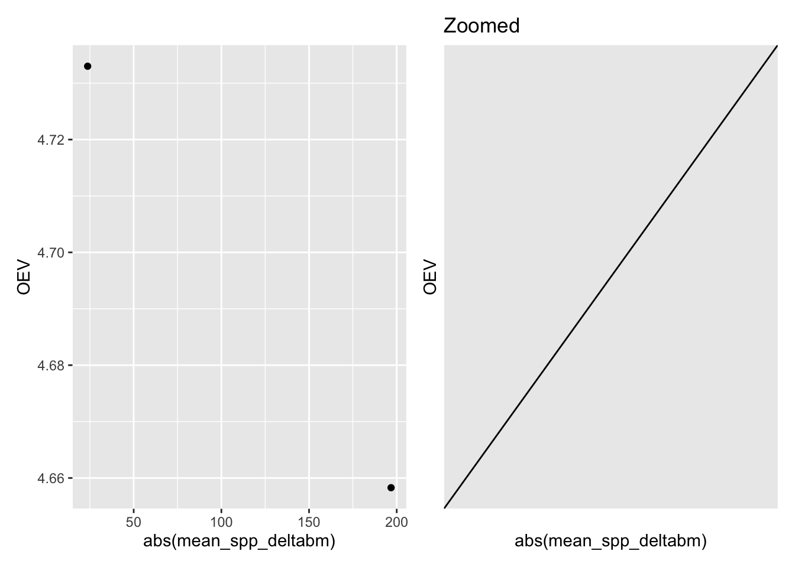
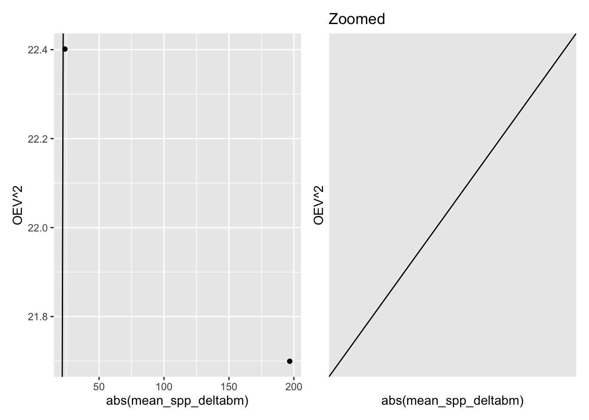

Show the code
rm(list=ls())
graphics.off()
library(tidyverse)
library(readxl)
library(MESS)
library(here)
library(cowplot)
library(GGally)
library(patchwork)
## source any required user defined functions
source(here("r/my_auc.R"))When we calculate species traits from their response to a disturbance in a community, can we then use a summary of those traits to create a community-level trait-based index (e.g. community diversity) that will be a good predictor of the community level stability.
Set up R, load libraries, import data, perform some data cleaning and wrangling.
rm(list=ls())
graphics.off()
library(tidyverse)
library(readxl)
library(MESS)
library(here)
library(cowplot)
library(GGally)
library(patchwork)
## source any required user defined functions
source(here("r/my_auc.R"))#### import and merge data ----
# study <- read_excel("Multistab_species_data_mfd.xlsx") %>%
# select(-c(35:51)) %>%
# rename(case_id = paper)
#rawData <- read_excel("Multistab_species_data_mfd.xlsx",
# sheet = "species data")
#communityStab <- read_excel("Multistab_species_data_mfd.xlsx",
# sheet = "communityFunction") %>%
# select(case_id, totRR, DAY, RD)
#allData <- study %>%
# select(-func, -resp.cat,-resp) %>%
# merge(., rawData,by = c('case_id'))%>%
# filter(spec.inf == 'species')
temp <- readRDS(here("data/sim_results.RDS"))
community_pars <- temp$community_pars
dynamics <- temp$dynamics_long## Some data checking ----
#which(is.na(allData$Con.M))
#unique(rawData$case_id)
#unique(allData$studyID)
#unique(allData$case_id)
#setdiff( study$case_id,allData$case_id)
# look at data
#unique(allData$species_specification)Here we calculate the stability as the difference between the control and treatment conditions. The actual calculation is a bit more complex–details are in the code.
## Community level stability ----
## Calculate and visualise the community level stability
## measures
## First for each time point in each case
comm_time_stab <- dynamics |>
## remove rows where biomass is 0 in both control and treatment
#filter((Con.M + Dist.M) != 0) |>
group_by(case_id, community_id, replicate_id, Time, Treatment) %>%
summarise(tot_ab = sum(Abundance, na.rm = T)) %>%
pivot_wider(names_from = Treatment, values_from = tot_ab) %>%
mutate(comm_LRR = log(Perturbed / Control),
comm_deltabm = (Perturbed - Control) /
(Perturbed + Control))
comm_time_stab |>
ggplot(aes(x = Time, y = comm_deltabm)) +
geom_line()
## And now across time points by auc
comm_stab <- comm_time_stab |>
group_by(case_id, community_id, replicate_id) |>
summarise(comm_tot_deltabm = my_auc_func(Time, comm_deltabm)) |>
mutate(OEV = sqrt(abs(comm_tot_deltabm)))
## I would be cautious about using splines without checking they are
## working as expected, here, and for the species level auc calculations.
## They might be not very well constrained at the two ends of the RD axis,
## and then make for some funking results.## Visualise community level response
cases <- unique(dynamics$case_id)
## case 9 has three species and quite a few time points
case_of_interest <- cases[1]
coi_auc <- comm_stab |>
filter(case_id == case_of_interest) |>
pull(comm_tot_deltabm)
p1 <- comm_time_stab |>
filter(case_id == case_of_interest) |>
select(case_id, Time, Control, Perturbed) |>
pivot_longer(names_to = "Treatment", values_to = "Values",
cols = c("Control", "Perturbed")) |>
ggplot(aes(x = Time, y = Values, col = Treatment)) +
geom_point() +
geom_line() +
ggtitle(paste(case_of_interest))
p2 <- comm_time_stab |>
filter(case_id == case_of_interest) |>
ggplot(aes(x = Time, y = comm_LRR)) +
geom_point() +
geom_line() +
geom_hline(yintercept = 0) +
ggtitle(paste(case_of_interest))
p3 <- comm_time_stab |>
filter(case_id == case_of_interest) |>
ggplot(aes(x = Time, y = comm_deltabm)) +
geom_point() +
geom_line() +
geom_hline(yintercept = 0) +
ggtitle(paste0(case_of_interest, "; AUC = ", round(coi_auc,4)))
p1 / p2 / p3
Just above here is an example of the dynamics of an aggregate community properties, such as total biomass.
comm_stab |>
ggplot(aes(x = comm_tot_deltabm)) +
geom_histogram()
Just above here the histogram of community stability measure.
Here is the case with very low stability…
## check out an odd case
case_of_interest <- "Comm-1_rep-1"
coi_auc <- comm_stab |>
filter(case_id == case_of_interest) |>
pull(comm_tot_deltabm)
p1 <- comm_time_stab |>
filter(case_id == case_of_interest) |>
select(case_id, Time, Control, Perturbed) |>
pivot_longer(names_to = "Treatment", values_to = "Values",
cols = c("Control", "Perturbed")) |>
ggplot(aes(x = Time, y = Values, col = Treatment)) +
geom_point() +
geom_line() +
ggtitle(paste(case_of_interest))
p2 <- comm_time_stab |>
filter(case_id == case_of_interest) |>
ggplot(aes(x = Time, y = comm_LRR)) +
geom_point() +
geom_line() +
geom_hline(yintercept = 0) +
ggtitle(paste(case_of_interest))
p3 <- comm_time_stab |>
filter(case_id == case_of_interest) |>
ggplot(aes(x = Time, y = comm_deltabm)) +
geom_point() +
geom_line() +
geom_hline(yintercept = 0) +
ggtitle(paste0(case_of_interest, "; AUC = ", round(coi_auc,4)))
p1 / p2 / p3
Looks unlikely that the AUC measure is correct here, but you get a different value for this case. I suspect you do some filtering / manipulation that I have not. I checked the AUC value for CK006_1 and we get the same value there.
comm_stab |>
filter(case_id != "CK066_4") |>
ggplot(aes(x = comm_tot_deltabm)) +
geom_histogram()
Just above is this histogram of without the odd case.
comm_stab |>
filter(case_id != "CK066_4") |>
ggplot(aes(x = OEV)) +
geom_histogram()
And here the histogram of the stability measure OEV, which is the square root of the absolute value of the previously shown measure.
For each species we calculate the difference between treated and control conditions. We then use that value as a species trait in calculations of community-level trait-based indicies that might predict the previously calculated community level stability measure. Note that I did not calculate the species stabilities based on relative abundances.
## Now the species level stabilities ----
## calculate stabilities (for now I don't look at the proportional stab)
species_time_stab <- dynamics |>
## remove rows where biomass is 0 in both control and treatment
#filter((Con.M + Dist.M) != 0) |>
pivot_wider(names_from = Treatment, values_from = Abundance) |>
mutate(spp_deltabm = (Perturbed - Control)/
(Perturbed + Control))
species_stab <- species_time_stab |>
group_by(case_id, community_id, replicate_id, Species_ID) |>
summarise(species_tot_deltabm = my_auc_func(Time, spp_deltabm))
## AUC calculation is giving warnings when there are duplicate RD values
## Need to check how important this is.
## Look at some of the species level data
cases <- unique(dynamics$case_id)
## case 9 has three species and quite a few time points
case_of_interest <- cases[1]
p1 <- dynamics |>
filter(case_id == case_of_interest) |>
select(case_id, Species_ID, Time, Treatment, Abundance) |>
ggplot(aes(x = Time, y = Abundance,
col = Species_ID, linetype = Treatment)) +
#geom_point() +
geom_line() +
ggtitle(paste(case_of_interest)) +
facet_wrap(~ Species_ID, nrow = 1, scales = "free_y")
p2 <- species_time_stab |>
filter(case_id == case_of_interest) |>
ggplot(aes(x = Time, y = spp_deltabm, col = Species_ID)) +
#geom_point() +
geom_line() +
geom_hline(yintercept = 0) +
ggtitle(paste(case_of_interest)) +
facet_wrap(~ Species_ID, nrow = 1, scales = "free_y")
p1 / p2
Just above is an example of the species level dynamics. And just below is the corresponding value for each species.
coi_auc <- species_stab |>
filter(case_id == case_of_interest) |>
pull(species_tot_deltabm)
coi_auc [1] -22.39619 164.92251 -14.67546 67.67425 1007.59937 -22.39619
[7] -22.39619 34.50213 197.49130 -22.39619 -22.39619 -22.39619## looks reasonable for this caseJust below the distribution of species responses (a little difficult to see clearly)…
species_stab |>
ggplot(aes(x = case_id, y = species_tot_deltabm)) +
geom_point() +
geom_line() +
coord_flip()
## Calculate community level indicies based on
## species level traits
comm_indicies <- species_stab |>
group_by(community_id, replicate_id, case_id) |>
summarise(mean_spp_deltabm = mean(species_tot_deltabm),
var_spp_deltabm = var(species_tot_deltabm))
## merge with comm stability measures
comm_all <- full_join(comm_stab, comm_indicies)I thought it likely that the mean of the species level responses would be a good predictor of the community level response, because the community level response is calculated from the sum of the species level dynamics.
Immediately below here are two graphs showing the relationship between the mean of the species responses and the community response. There is a pretty strong relationship and it is on the 1:1 line.
p1 <- comm_all |>
na.omit() |>
ggplot(aes(mean_spp_deltabm, comm_tot_deltabm)) +
geom_point() +
geom_abline(intercept = 0, slope = 1) +
ggtitle("All data")
p2 <- comm_all |>
na.omit() |>
filter(abs(mean_spp_deltabm) < 1) |>
ggplot(aes(mean_spp_deltabm, comm_tot_deltabm)) +
geom_point() +
geom_abline(intercept = 0, slope = 1) +
ggtitle("Zoomed")
p1 + p2
Immediately below here are two graphs showing the relationship between the absolute value of the mean of the species responses and the square of the absolute values of the community response. There is a reasonably strong relationship, but not on 1:1 line.
## some graphs
p1 <- comm_all |>
na.omit() |>
ggplot(aes(abs(mean_spp_deltabm), OEV)) +
geom_point() +
geom_abline(intercept = 0, slope = 1)
p2 <- comm_all |>
na.omit() |>
filter(abs(mean_spp_deltabm) < 1) |>
ggplot(aes(abs(mean_spp_deltabm), OEV)) +
geom_point() +
geom_abline(intercept = 0, slope = 1) +
ggtitle("Zoomed")
p1 + p2
And with OEV squared below the relationship is stronger and is on 1:1 line.
## some graphs
p1 <- comm_all |>
na.omit() |>
ggplot(aes(abs(mean_spp_deltabm), OEV^2)) +
geom_point() +
geom_abline(intercept = 0, slope = 1)
p2 <- comm_all |>
na.omit() |>
filter(abs(mean_spp_deltabm) < 1) |>
ggplot(aes(abs(mean_spp_deltabm), OEV^2)) +
geom_point() +
geom_abline(intercept = 0, slope = 1) +
ggtitle("Zoomed")
p1 + p2
The mean of the species level response could be close to zero for a couple of reasons: all species having very low response, or it could be that species with positive responses are balanced by those with negative responses. The latter is what I’ve been thinking about when thinking about response diversity.
I think the variation around the line could be interesting, particularly for the points quite far from the line. One of the first things I would do when trying to explain this variation is to check that the AUC calculation with splines is not introducing noise. I would think about checking that by making a version of the total response that doesn’t use a spline, and if possible works only on the raw data.
I might then look to see whether features of the distribution of the species level responses other than the mean can explain the noise. Perhaps variability…
How interesting and important do I think the quite strong 1:1 relationships above, i.e. how interesting and important do I think that “it works”. I worry that we found something that is mathematically inevitable and would want to rule that out.
What do I think these results say about using response in relative abundance, or a measure of functional diversity to summarise the species responses? Perhaps those could be used to explain some of the variation around the relationships above. It could also be that I miss something fundamental in the motivation of what y’all have been aiming for.